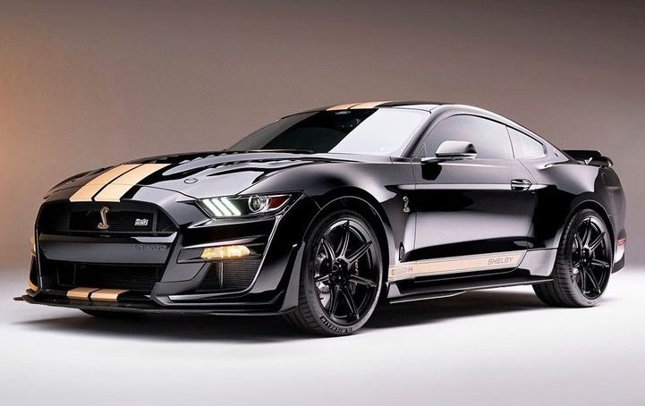

Quelle est la meilleure voiture ?
Pour vivre sa meilleure vie avec la meilleure voiture de tous les temps

Sur mon site, vous découvrirez des astuces pour développer des sites internet mais aussi des actualités sur des véhicules mythiques et incroyables tel que les véhicules de la marque Ford et de son préparateur Shelby
Pour vivre sa meilleure vie avec la meilleure voiture de tous les temps

Pour vivre sa meilleure vie avec la deuxième meilleure voiture de tous les temps

Pour vivre sa meilleure vie avec la meilleure Mustang jamais créée